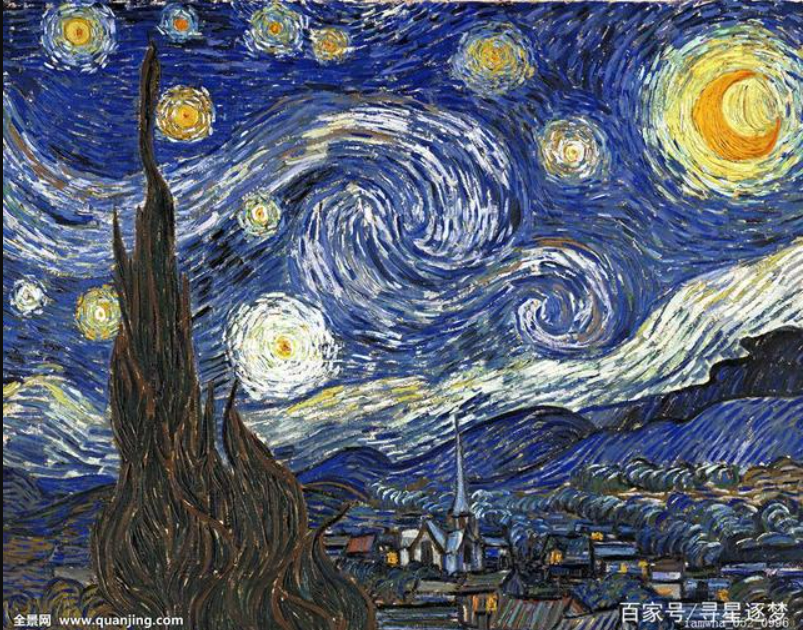
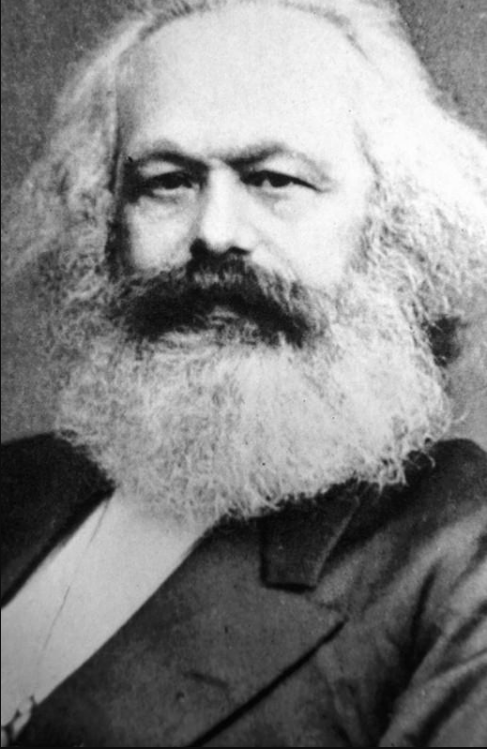
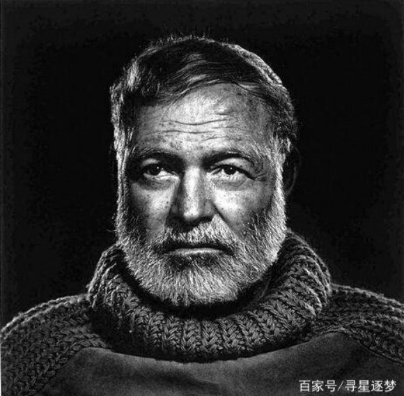

白羊座的梵高
著名画家梵高，出生于公元1853年3月30日。他是荷兰后印象派杰出人物。在白羊座敢闯敢拼的性格影响下梵高早年做过职员、商行的经纪人、传教士最后专心绘画。梵高早期作品大都是写实风格后来在印象派的影响下他的风格巨变，一改严肃谨慎变成了简洁明亮、色彩强烈的风格。这就体现了白羊座热烈充满活力与激情的特点。有人曾经评价梵高“他生下来，他画画，他死去，麦田一片金黄，一群乌鸦惊叫着飞过天空。”这就是白羊：不要平庸的活，不要碌碌无为，要热烈的活，热烈的爱。轰轰烈烈，才不枉为人。

金牛座的马克思
思想家马克思，出生于公元1818年5月5日。他是无产阶级伟大导师，马克思著有《资本论》、《共产党宣言》等。马克思是科学社会主义创始人，是伟大的政治家、哲学家。金牛座人是很容易取得成功的，他们气质优雅，愿意努力奋斗，愿意拼搏，默默付出，像黄牛一样默默耕耘。而且他们对物质极为重视，从不乱花钱，也非常信守承诺，所以金牛座很容易成功。
双子座的陈景润
数学家陈景润，出生于1933年5月22日，是当代著名的数学家。1973年发表的（1+2）的 详细证明被公认为是对哥德巴赫猜想研究的重大贡献。双子座的人非常聪明充满智慧。他们思维敏捷，反应灵敏。一旦他们静下心来专心做事很有可能取得巨大的成就。

巨蟹座的海明威
作家:海明威，1899年7月21日出生于美国。他是美国著名记者、作家，被称为20世纪最著名的小说家之一。19954年海明威的 中篇小说《老人与海》获得诺贝尔文学奖。他是美利坚民族精神丰碑，被称为文坛硬汉。海明威作品简洁朴实、直观且蕴含丰富的情感。巨蟹座感情丰富细腻，哲学思考力很强，善良敏感，有着丰富的想象力，非常有艺术天赋。